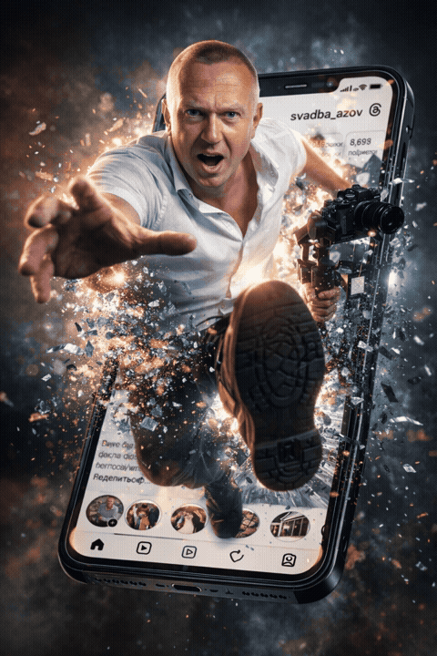
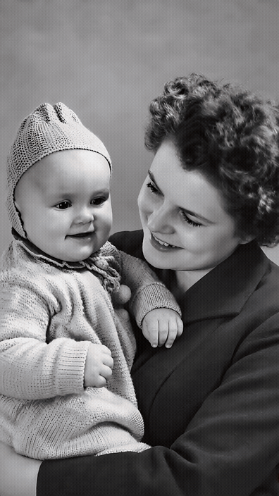
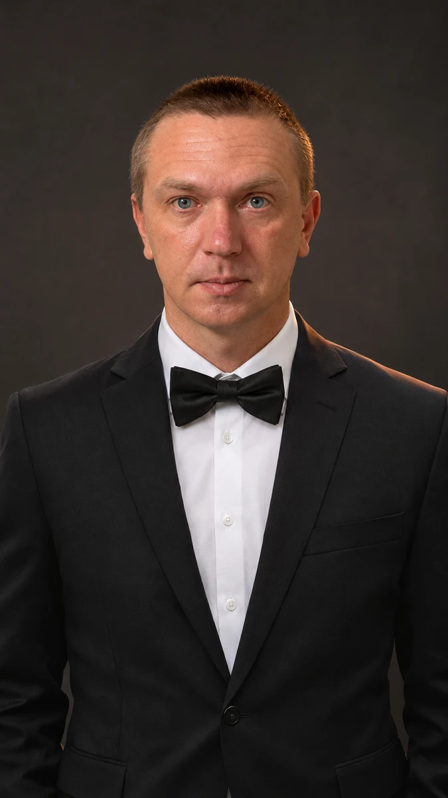

Семейные истории в фото и видео
Я Андрей Золотарев. Создаю именные фотокниги, оживляю снимки и монтирую ролики для семьи, школы и бизнеса.

Услуги и примеры работ

ИИ-фотокниги
Семейная история, выпускной или юбилей в виде фотокниги.
- Как создаётся
- Подбираю снимки, оформляю обложку и развороты. С помощью ИИ можно восстановить архивные кадры, подобрать фоны и создать иллюстрации в едином стиле.
- С чего начать
- Подготовьте фотографии, имена и даты, которые хотите подписать, и пару примеров оформления, если они у вас есть.
Новогоднее приключение Вовочки


ИИ-ролики к юбилеям
Ожившие семейные фотографии, музыка и поздравления в одном ролике.
- Как создаётся
- Собираю историю из кадров разных лет, добавляю движение отдельным снимкам и монтирую сцены под музыку. В ролик можно включить голосовые поздравления, подписи и даты.
- С чего начать
- Подберите фотографии юбиляра, укажите дату праздника и расскажите, где будет показ ролика. Для экрана в зале и для телефона можно подготовить подходящий формат.
Анимация
Короткие клипы, оживлённые фотографии и семейные истории.
- Как создаётся
- Подбираю планы, собираю сцены и настраиваю движение, переходы и ритм. Музыку, озвучку и титры можно добавить при монтаже.
- С чего начать
- Подготовьте исходные фото или иллюстрации, желаемую длительность и формат кадра: горизонтальный 16:9 или вертикальный 9:16.
Реставрация фото
Восстановление семейных снимков с вниманием к лицам, одежде и деталям оригинала.
- Как создаётся
- Убираю царапины, пятна и шум, корректирую тон и восстанавливаю повреждённые участки. По запросу можно подготовить цветную версию и PNG в 4K.
- С чего начать
- Лучше всего подойдёт скан или фотография оригинала в максимальном доступном разрешении.

ИИ для школьников
Школьные и выпускные ролики из фотографий класса. Можно оживить отдельные снимки, собрать историю под музыку и добавить подписи или поздравления.
Для своего ролика подготовьте фотографии, укажите класс и дату показа.
Ролик к вечеру встречи
Видео для встречи выпускников. Его можно показать на большом экране или отправить одноклассникам.
Казачка
Музыкальный клип от бабушки.
Реклама
Короткие рекламные ролики для соцсетей, товаров и услуг. Добавлю титры, музыку и призыв к действию под формат вашей площадки.
Обсудить роликКороткие поздравлялки
Короткие видеопоздравления, которые можно отправить близким в мессенджере.
Частые вопросы
Можно использовать старые снимки в фотокниге?
Да. Перед вёрсткой можно восстановить повреждённые фотографии и выровнять контраст, чтобы мелкие детали лучше читались на развороте.
Можно сделать ролик из нескольких фотографий?
Да. Из снимков можно собрать короткую историю с плавными переходами, музыкой и титрами.
Можно сохранить чёрно-белую версию снимка?
Да. Чёрно-белую версию можно подготовить отдельно или вместе с цветной.

Контакты
Андрей Золотарев
Откройте MAX, прикрепите фотографии к сообщению и укажите, какая услуга вам нужна.